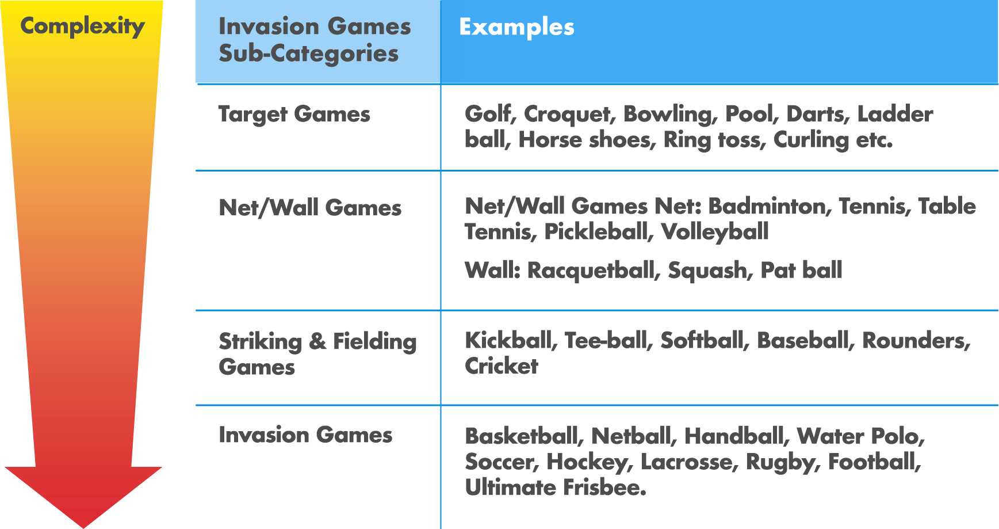
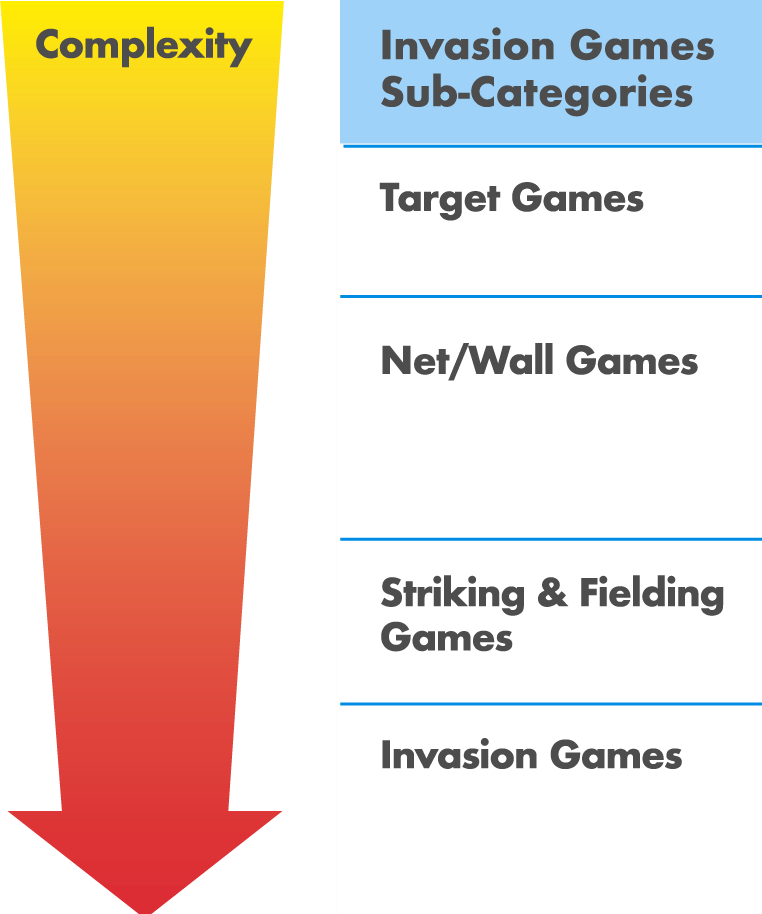
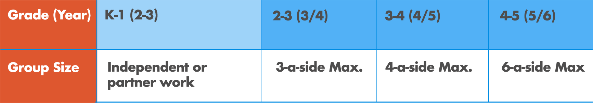
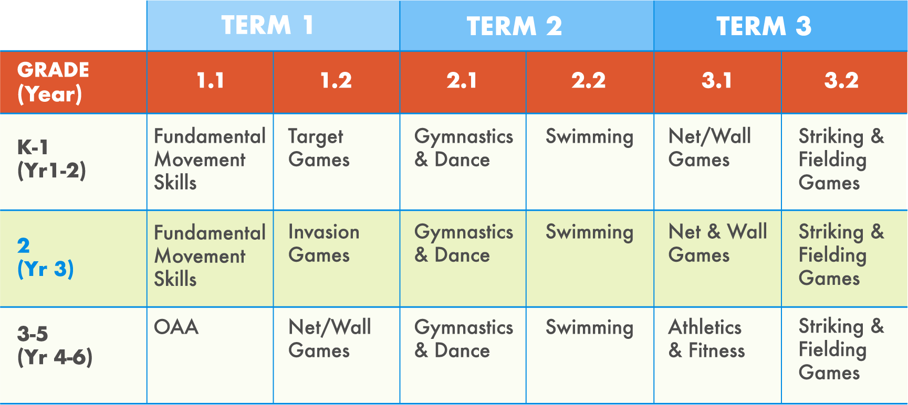
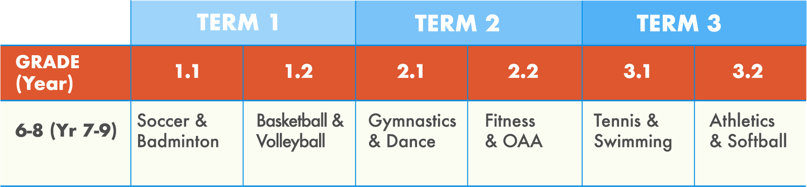

When planning a Physical Education map for the entirety of each academic year, it is important to address a host of aims, from National Curriculum requirements, to school- and departmental policies, and even your own personal views of the subject (Bailey, 2001). Furthermore, it is important to take in to consideration recommendations from literature to ensure your curriculum is developmentally appropriate for each year group/grade.
It has been well established that physical education has the potential to help develop the whole-child (physically, cognitively, socially, emotionally, morally, and even spiritually), and in order to do so it is essential that students experience a breadth of activities. Below is an overview of the most prevalent activities in PE curriculums and a brief rationale of its contribution.
Essential for introducing pupils to explore a range of basic movements (manipulative, locomotor, and stability).
To develop a range of physical skills and tactical principles in a range of different games in both cooperative and competitive environments. Also, ideal for promoting character attributes such as respect [1].
Encompasses all domains of learning from the physical to affective domains. For example pupils can develop personally, socially and emotionally through dance by exploring moods and emotions [3].
Regarded as the core of all movement experience as students learn to travel, jump, balance, and roll with control and coordination [2].
Develop water safety, confidence and competence in all pupils [8].
Improve pupils understanding of how the body works, the benefits of exercise and how to develop and maintain and healthy, active lifestyle.
Ideal for exploring different athletic actions, striving to perform at one’s best, and performing and maximum levels [4].
Helps provide a rich movement experience (i.e., crawling, climbing, swinging and balancing) and helps develop skills such as leadership, teamwork, environmental awareness and other character traits [5].
With regards to ensuring each activity is developmentally appropriate there has been some suggestions about when to include and exclude certain activities. Fundamental Movements Skills (FMS), for example is particularly important for Key Stage 1 (Grades K-1), and is a key component of many elementary (primary) PE curriculum’s around the world such as in Australia, Canada, UK and USA (8, 9, 10, 11). FMS has been recognized as vital for pupils in becoming proficient in a range of basic skills and activities which require complex movements (Ward, 2012).
Games activities is the largest category as it includes sub-categories which within itself have many different types of games. This is useful, as the different categories of games can be placed on a continuum of tactical complexity, where target games have the least tactical implications and invasion games have the most (see table 1). As a result, when planning a PE curriculum it seems logical to introduce games to younger students in a logical manner and that group sizes should be appropriate to the age group (6), this has been summarized in table 2.
Table 1. Categorization of games based upon their tactical complexity (Ward, 2012)
 Table 2. Group sizing in games activities for Elementary aged students

Furthermore, within each sub-category games can be placed on a continuum for skill complexity. At its most primitive level (young children with no previous experience) throwing a large ball using hands is the easiest manipulative skill and the most complex would be striking a small ball with a long club, as in golf (Ward, 2012). Therefore, when introducing games to students in Year 1 (Grade 2) it would be best to start with simple target games at the beginning of the year and then culminating the year with a modified striking and fielding games.
Diagram 1: Continuum of skill complexity
In 2012, Ward suggested how much time should be allocated to each game category throughout the elementary (primary) years, which we have adapted in order to make it more visually friendly for our PE community (table 3).
Table 3. Categorization of games based upon their tactical complexity (Ward, 2012)
With regards to athletics (T&F), it may seem inappropriate to incorporate it into the curriculum with Year 1 and 2 as it will generally be on the same plane as FMS. Therefore, introducing athletics may be best suited for KS2 with a focus on the athletic form and exploring different action possibilities when running, throwing and jumping (Griggs, 2012). At KS3-4 pupils can begin focusing more on athletics as a sport, and begin refining their techniques and performing at maximum levels (Griggs, 2012).
For Dance, Gymnastics and Swimming, they should be incorporated in to the curriculum from the outset as they are vital for the development of the whole-child. As students get older, it would be the prerogative of the teacher whether to omit or include gymnastics or dance from their curriculum based upon the abilities and interests of the class. But this should not happen until at the earliest Year 8 (Grade 7). Even still there would be strong and valid support to include gym and dance in the curriculum.
For OAA activities, there are no set recommendations as to when to introduce the subject. However, in the UK National Curriculum it is suggested to be introduced at Key Stage 2 (Grades 4 & 5) which is a good age to start adding more complex cognitive challenges which require collaborating in a team.
After consideration of the aforementioned guidelines and recommendations on planning a PE curriculum, hopefully you now feel more prepared to begin planning your own elementary curriculum map. We at the PE Project have put together a sample curriculum which tries to encompass all the guidance (see table 5).
Table 5. Sample Curriculum for Elementary PE
*NB: Each term has been divided in to half-terms in order to incorporate as many different activities as possible.
With regards to planning a middle-school (Key Stage 3) PE curriculum map, games activities generally become more sport specific. Therefore, the selection of activities will be dependent upon your location, season, and departmental emphasis and strengths. If working in a department with a focus on school team success like soccer, basketball, volleyball, tennis and softball then a curriculum may look very games heavy. However, it is important to maintain the academic rigor of our subject by continuing to provide a broad and balanced curriculum. Table 6 provides a typical example of a middle-school PE curriculum. The biggest criticism of the curriculum below is that it is very games dominant which has been a prevalent and reoccurring problem in PE.
Table 6. Example middle-school PE curriculum
For Junior-High (KS4) and Senior-High (KS5) PE, it is hoped that pupils at this point have experienced a range of high-quality physical education activities and are able to begin determining their own physical activity preferences. In the UK, the KS4 National Curriculum continues to emphasize involving students in a range activities that develop personal fitness, promote a healthy, active lifestyle, and develop tactical problem solving in different games (8). Therefore, in PE it would be ideal to be able to offer students pathway options which they can enroll in at the beginning of each term, which could be as follows:
Pathway 1 - Sports Leadership: Students can develop and gain skills, knowledge, experience and possibly qualifications in Coaching and Officiating.
Pathway 2 - Competitive Sports: Pupils train for competition for school or external teams.
Pathway 3 – Fitness & Nutrition: Students learn exercise training methods and principles in order to lead their own and others in fitness training sessions. Pupils also learn about nutrition and can design their own dietary plan.
Pathway 4 – Alternative Games & OAA: Students participate in a range of fun alternative games and Outdoor and Adventurous Activities in order to maintain a healthy-active lifestyle.
Thank you for taking the time to read this article on Curriculum Mapping. We hope that it has provided you with some food for thought on how you may go about designing your own PE Curriculum Map. If there is something that you feel is missing and would like to contribute to the PE Project then please contact us here.
References
- Ward, G. (2012) Games in the Primary School: They can’t catch so what’s the point in teaching them to play a game? In Griggs, G. (Ed) An introduction to Primary Physical Education. London: Routledge.
- Lawry, P. (2012) Gymnastics in the Primary Years: The foundation of learning to move with enhanced confidence, competence and imagination. In Griggs, G. (Ed) An introduction to Primary Physical Education. London: Routledge.
- Jefferson-Buchanan, R. (2012) Dance teaching and learning possibilities within the early years and primary school context. In Griggs, G. (Ed) An introduction to Primary Physical Education. London: Routledge.
- Griggs, G. (2012) Getting Athletics off the track, out the sack and ‘back on track’. In Griggs, G. (Ed) An introduction to Primary Physical Education. London: Routledge.
- Wainwright, N. (2012) Outdoor and adventurous activities: From desks to dens. In Griggs, G. (Ed) An introduction to Primary Physical Education. London: Routledge.
- Mitchell, S.A., Oslin, J.L., Griffin, L.L. (2013) Teaching Sport Concepts and Skills: A Tactical games approach for Ages 7-18. Third Edition. Champaign, IL: Human Kinetics.
- Department for Education (2013) Physical education programmes of study: key stages 1 and 2 Accessed on: 19/3/18 Available Here
- Australian Curriculum (2015) Health and Physical Education. Accessed on: 20/3/2018 Available Here
- Colvin, A.V, Markos, N., & Walker, P. (2016) Teaching Fundamental Motor Skills. 3rd Edition. Champaign, IL: Human Kinetics.
- 10. Ontario Ministry of Education (2015) Accessed on: 3/20/18 Available Here